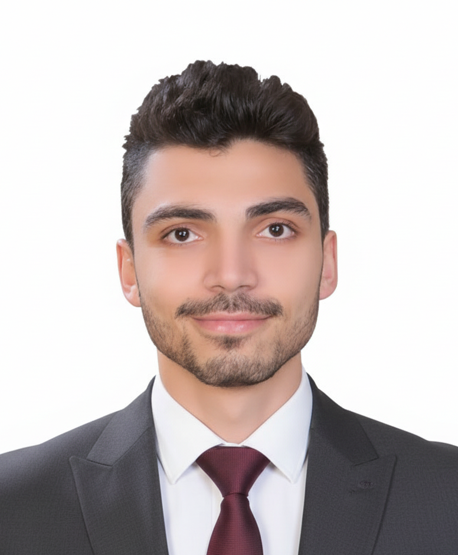

add photoMy research focuses on electrohydrodynamic (EHD) actuation for soft robotics and wearable human–machine interfaces. I build silent, flexible fluidic pumps and turn them into haptic gloves, prosthetic hands, and VR/XR systems. 🤖⚡🖐
I am a third-year PhD candidate at the Institute of Science Tokyo (formerly Tokyo Tech), working in Prof. Shingo Maeda's lab within the WISE-SSS program. My research focuses on electrohydrodynamic (EHD) pump technology — a silent, flexible, and scalable actuation method — and its application to soft robotics and wearable human–machine interfaces.
My doctoral work spans the full stack from fundamental fluid physics to system-level wearable devices. I have developed resilient flexible EHD pumps that survive dielectric breakdown, high-power-density wire-electrode designs, and data-driven Bayesian optimization of dielectric fluid mixtures. My current ongoing work explores a VR/XR haptic-thermal feedback glove driven by EHD actuation.
Before my PhD, I worked as an Assistant Lecturer at Benha University (Egypt), an industrial robotics engineer deploying Kawasaki welding robots and automated packaging lines, and completed an MSc on a hybrid robotic-assisted system for neurosurgery. I am also a practicing ROS engineer, having implemented SLAM and autonomous navigation pipelines for self-driving vehicles.
Flexible comb-electrode EHD pumps with passive resilience against dielectric breakdown, maintaining ~90% performance through ~100 breakdown events. Published in Advanced Science, 2025.
Self-recovering wire-electrode EHD pump architecture achieving significantly higher power density for portable actuation applications. Published in Advanced Intelligent Systems, 2026.
Bayesian optimization of HFE-Novec dielectric fluid mixtures to maximize EHD pump performance, revealing complex trade-offs between flowrate, pressure, and power consumption.
EHD-driven wearable glove delivering haptic and thermal feedback for VR/XR applications. Demonstrated 12.4 kPa max pressure at 6.5 kV with 10 mm optimal diaphragm diameter at RoboSoft 2026.
McKibben artificial muscles driven by EHD pumps for prosthetic hand applications, achieving bidirectional actuation via polarity switching for natural grasping and manipulation motions.
ROS/Autoware pipelines for LiDAR-based SLAM and autonomous vehicle navigation, with real-world deployment on campus roads. Validated sim-to-real transfer using NDT-matching localization.
Wearable soft robotic glove delivering simultaneous haptic pressure and thermal feedback for virtual reality applications. Demonstrated at RoboSoft 2026 Industry–Academia Forum, Tokyo. Key specs: 12.4 kPa max pressure at 6.5 kV, 10 mm optimal diaphragm diameter.
Bidirectional prosthetic hand using McKibben artificial muscles actuated by high-pressure EHD pumps. Polarity switching enables natural motions including handshake, cup grasping, and object lifting without external compressors.
Self-driving electric vehicle with LiDAR, radar, and GPS, using ROS/Autoware for SLAM, NDT-matching localization, and autonomous navigation. Successfully demonstrated on Ookayama campus roads with full obstacle avoidance.
MSc thesis project: a novel 5-DOF Remote Center of Motion (RCM) hybrid mechanism for minimally invasive stereotactic neurosurgery. Developed kinematics, dynamics, trajectory planning, and real-time PID control validated in Adams/MATLAB.
I am open to research collaborations, academic visits, and discussions about soft robotics, EHD actuation, and wearable HMI systems. Feel free to reach out for any inquiries.
Particularly interested in connecting with researchers working on soft actuators, wearable robotics, human–machine interfaces, and VR/XR haptic systems.
Send an Email →